항공산업기사 (2009-03-01 기출문제)
1과목: 항공역학
1. 특정한 헬리콥터에서 회전날개(Rotor Blade)에 비틀림각을 주는 이유로 가장 옳은 것은?
- 회전날개의 강도를 보장하기 위하여
- 회전날개의 회전속도를 증가시키기 위하여
- 전진비행에서 발생하는 잔동을 줄이기 위하여
- 정지비행시 균일한 유도속도의 분포를 얻기 위하여
(정답률: 80%)

2. 다음 중 정적 중립을 나타낸 것은?
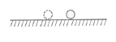
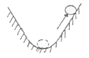
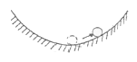
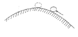
(정답률: 92%)
3. 다음 중 테이퍼형 날개(taper wing)의 실속 특성으로 옳은 것은?
- 날개 뿌리에서부터 실속이 일어난다.
- 날개 끝에서부터 실속이 일어난다.
- 초음속에서 와류의 형태로 실속이 일어난다.
- 스팬(span)방향으로 균일하게 실속이 발생한다.
(정답률: 75%)
4. 다음 중 프로펠러 비행기의 이용마력과 필요마력을 비교할 때 필요마력이 최소가 되는비행속도는?
- 최고 속도
- 최저 상승률일 때의 속도
- 최대항속거리를 위한 속도
- 최대항속시간을 위한 속도
(정답률: 60%)
5. 유체의 점성을 고려한 마찰력에 대한 설명으로 옳은 것은?
- 마찰력은 유체의 속도에 반비례한다.
- 마찰력은 온도변화에 따라 그 값이 변한다.
- 유체의 마찰력은 이상유체에서만 고려된다.
- 마찰력은 유체의 종류에 관계없이 일정하다.
(정답률: 73%)
6. 날개 시위가 2.5m 인 비행기가 360km/h 인 속도로 비행하고 있을 때, 공기 흐름의 레이놀즈수는 약 얼마인가? (단, 공기의 동점성계수는 0.14cm2/sec 이다.)
- 1.54×104
- 1.76×105
- 1.54×106
- 1.79×107
(정답률: 75%)
7. 프로펠러 항공기의 비행속도를 옳게 나타낸 식은? (단, 프로펠러의 진행률: J, 회전면의 지름:D, 회전수: n 이다.)
- J/(nD)
- (nD)/J
- JnD
- (JD)/n
(정답률: 71%)
8. 프로펠러의 동력(P)와 추력(T)에 관한 식으로 옳은 것은? (단, n: 프로펠러 회전수, D: 프로펠러 회전면의 지름, CP: 동력계수, Ct: 추력계수, ρ: 공기밀도이다.)
- P = CPρn2D3, T = Ctρn2D5
- P = CPρn3D5, T = Ctρn2D5
- P = CPρn2D3, T = Ctρn2D4
- P = CPρn3D5, T = Ctρn2D4
(정답률: 75%)
9. 항공기의 동적안정성이 양(+)인 상태에서의 설명으로 옳은 것은?
- 운동의 진폭이 시간에 따라 점차 감소한다.
- 운동의 주기가 시간에 따라 점차 감소한다.
- 운동의 진동수가 시간에 따라 점차 감소한다.
- 운동의 고유진동수가 시간에 따라 점차 감소한다.
(정답률: 74%)
10. 프로펠러 항공기가 최대 항속거리를 비행하기 위한 조건으로 옳은 것은? (단, CL은 양력계수, CD는 항력계수이다.)
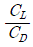
가 최대일 때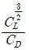
가 최대일 때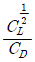
가 최대일 때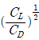
가 최대일 때
(정답률: 82%)
11. 비행기의 무게가 5000kg 이고 큰 날개 면적이 60m2 이며, 해면 위를 100km/h 의 속도로 비행할 때 양력계수는 약 얼마인가? (단, 공기의 밀도는 0.125 kgㆍs2/m4 이다. )
- 0.13
- 0.86
- 1.73
- 2.46
(정답률: 66%)
12. 고양력 장치인 플랩(flap)의 종류 중 양력계수가 제일 큰 것은?
- Plain Flap
- Split Flap
- Slotted Flap
- Fowler Flap
(정답률: 89%)
13. 해발고도에서의 표준대기압을 나타내는 단위 중 수은주가 지시하는 값은?
- 29.92mmHg
- 760mmHg
- 2116mmHg
- 1013mmHg
(정답률: 76%)
14. 활공각 30˚ 로 활공하고 있는 항공기의 양력이 1500kgf 일 때 이 항공기에 작용하는 항력은 약 몇 kgf 인가?
- 748
- 866
- 937
- 1328
(정답률: 80%)
15. 대기권을 [보기]와 같이 고도에 따른 온도분포에 의해 구분할 때 ( )안에 알맞은 것은?
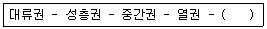
- 전리권
- 제트권
- 극외권
- 이탈권
(정답률: 94%)
16. 양력계수에 대한 설명으로 틀린 것은?
- 날개골의 두께와는 무관하다.
- 받음각에 관계되는 무차원수이다.
- 받음각을 증가시키면 양력계수가 최대값까지 증가한다.
- 일정한 받음각을 넘으면 양력계수가 급격히 감소하는 현상을 실속이라 한다.
(정답률: 75%)
17. 비행기의 세로축(longtudinal axis)을 중심으로 한 운동(rolling)과 가장 관계가 깊은 조종면은?
- 플랩(flap)
- 승강키(elevator)
- 방향키(rudder)
- 도움 날개(aileron)
(정답률: 86%)
18. 날개 드롭(wing drop)에 대한 설명으로 틀린 것은?
- 옆놀이와 관련된 현상이다.
- 두꺼운 날개를 사용한 비행기가 천음속으로 비행시 발생한다.
- 한쪽 날개가 충격 실속을 일으켜서 갑자기 양력을 상실하며 발생하는 현상이다.
- 아음속에서 충격파가 과도할 경우 날개가 동체에서 떨어져 나가는 현상을 말한다.
(정답률: 79%)
19. 평형상태에 있는 비행기가 교란을 받았을 때 처음의 상태로 돌아가려는 힘이 자체적으로 발생하게 되는 데 이와 같은 정적안정상태에서 작용하는 힘을 무엇이라 하는가?
- 가속력
- 기전력
- 감쇠력
- 복원력
(정답률: 96%)
20. 헬리콥터에 기체진동을 주는 원인 중 한 가지로 래그각(lag angle)이 주기적으로 증가하는 운동을 의미하는 것은?
- 위빙(weaving)
- 플래핑(flapping)
- 헌팅(haunting)
- 페더링(feathering)
(정답률: 58%)
2과목: 항공기관
21. 가스터빈기관 계통 중에서 마그네틱 칩 디텍터(Magnetic Chip Detector)를 점검하여야 하는 계통은?
- 연료계통
- 시동계통
- 윤활계통
- 발전계통
(정답률: 64%)
22. 항공기 터빈기관의 오일 계통에서 사용되는 그림과 같은 압력오일펌프의 명칭은?
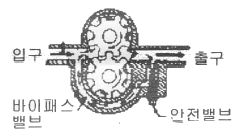
- 기어식
- 베인식
- 루츠식
- 플런저식
(정답률: 91%)
23. 왕복기관의 저압점화계통에서 각각의 스파크 플러그(spark plug)에 필요한 것은?
- 변압기
- 캠
- 콘덴서
- 브레이커 포인트
(정답률: 43%)
24. 다음 항공기 기관 중 추진체에 의해 발생되는 최종 기체가 다른 것은?
- 왕복 기관
- 램제트 기관
- 터보팬 기관
- 터보제트 기관
(정답률: 80%)
25. 일반적으로 왕복기관 실린더 내의 최대 폭발압력이 발생하는 시점은?
- 피스톤의 정확한 상사점에서
- 피스톤의 상사점 후 크랭크각 약 10˚에서
- 피스톤의 상사점 후 크랭크각 약 25˚에서
- 피스톤의 하사점 후 크랭크각 약 25˚에서
(정답률: 72%)
26. 포준상태에서의 이상기체 20ℓ를 5기압으로 압축하였을 때 부피는 몇 ℓ가 되겠는가? (단, 변화과정 중 온도는 일정하다.)
- 0.25
- 2.5
- 4
- 10
(정답률: 86%)
27. 프로펠러의 슬립(slip)에 대한 설명으로 옳은 것은?
- 기하학적 피치와 유효피치의 차이
- 블레이드의 정면과 회전면 사이의 각도
- 프로펠러가 1회전하는 동안 이동한 거리
- 허브 중심으로부터 블레이드를 따라 인치로 측정되는 거리
(정답률: 86%)
28. 왕복기관 연료계통에 사용되는 이코노마이저 밸브가 닫힌 위치로 고착되었을 때 발생하는 현상에 대한 설명으로 옳은 것은?
- 순항속도 이하에서 노킹이 발생하게 된다.
- 순항속도 이하에서 조기점화가 발생하게 된다.
- 순항속도 이상에서 지연점화가 발생하게 된다.
- 순항속도 이상에서 디토네이션이 발생하게 된다.
(정답률: 83%)
29. 터보제트 기관에서 연료 유량과 제트노즐 출구의 압력차를 무시했을 경우 진추력(Netthrust)을 옳게 나타낸 식은? (단, Fn: 진추력, Wf: 연료의 흐름량, Wa: 흡입 공기의 유량, Vj: 배기 가스의 속도, Va: 비행 속도, Aj: 배기 노즐의 면적, g: 중력가속도, Pa: 대기 압력, Pj: 배기노즐에서의 정압이다.)
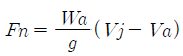
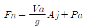
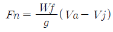
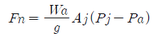
(정답률: 76%)
30. 전기식 시동기(Electric Starter)에서 클러치(Clutch)의 작동 토크값을 설정하는 장치는?
- Clutch Plate
- Clutch Housing Slip
- Rachet Adjust Regulator
- Slip Torque Adjustment Unit
(정답률: 79%)
31. 다음 중 왕복기관의 체적효율(Volumetric efficiency)을 높이는 방법이 아닌 것은?
- 흡입공기 온도를 낮춘다.
- 높은 고도에서 작동시킨다.
- 과급기(supercharger)를 사용한다.
- 흡입구 및 기화기의 압력손실을 낮춘다.
(정답률: 72%)
32. 다발 항공기에서 프로펠러의 회전속도를 자동적으로 조절하고 모든 프로펠러를 같은 회전속도로 유지하기 위한 장치를 무엇이라고 하는가?
- 조속기
- 피치변경모터
- 동조기
- 슬립링(Slip ring)
(정답률: 68%)
33. 가스를 팽창 또는 압축시킬 때 주의와 열의 출입을 완전히 차단시킨 상태에서 변화하는 과정을 나타낸 식은? (단, P는 압력, v는 비체적, T는 온도, k는 비열비이다.)
- Pv=일정
- Pvk=일정
- P/T=일정
- T/v=일정
(정답률: 68%)
34. 열역학에서 사용되는 단위에 대한 설명으로 옳은 것은?
- 1PS 마력은 145kgfㆍm/s 이다.
- 1BTU는 물 1 lb의 온도를 1℃ 높이는데 필요한 열량을 말한다.
- 비열이란 일정 유체 1 kg을 1시간 끓이는데 필요한 열량을 말한다.
- 화씨 온도는 얼음의 융점과 물의 비등점 사이를 180등분한 눈금을 이용한다.
(정답률: 54%)
35. 항공기 엔진에서 발생하는 역화(Backfiring)의 가장 큰 원인이 되는 것은?
- 점화시기가 빠른 경우
- 혼합비가 희박한 경우
- 혼합비가 농후한 경우
- 흡입 밸브가 고착된 경우
(정답률: 68%)
36. 가스터빈기관의 배기부에서 배기파이프(Exhaust Pipe) 또는 테일 파이프라고도 하며, 터빈을 통과한 배기가스를 대기중으로 유도하기 위한 통로 역할을 하는 부분의 명칭과 그림에서 이에 해당하는 것을 옳게 짝지은 것은?
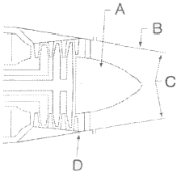
- 배기 노즐 - A
- 배기 덕트 - B
- 배기 콘 - C
- 테일 콘 - D
(정답률: 83%)
37. 왕복기관에 사용되는 과급기로 얻을 수 있는 효과가 아닌 것은?
- 기관의 마력당 중량을 낮춘다.
- 흡기 압력을 높여 평균유효압력을 증가시킨다.
- 공기 흐름량을 조절하여 매니폴드를 보호한다.
- 연료 기화를 촉진시켜 연료 소비율을 감소시킨다.
(정답률: 50%)
38. 피스톤 링의 끝은 링 홈에 링을 끼운 상태에서 끝 간격을 갖도록 하여야 한다. 이러한 피스톤 링의 끝 간격 모양 중 제작이 쉽고, 사용하기 편리한 형태로 일반적으로 가장 널리 이용되는 것은?
- 직선형
- 쐐기형
- 계단형
- 테이퍼형
(정답률: 63%)
39. 가스터빈 기관에서 사용하는 압축기 중 원심형과 비교하여 축류형의 장점은?
- 무게가 가볍다.
- 압축기의 효율이 높다.
- 시동 출력이 낮다.
- 회전 속도 범위가 넓다.
(정답률: 74%)
40. 항공기에 장착되어 있는 터보제트 기관을 시동하기 전에 점검해야 할 사항이 아닌 것은?
- 추력 측정
- 엔진의 흡입구
- 엔진의 배기구
- 연결부분 결합상태
(정답률: 88%)
3과목: 항공기체
41. 다음 중 세미모노코크 형식의 항공기 동체에서 표피가 주로 담당하는 것은?
- 축하중, 전단력
- 우력, 비틀림 모멘트
- 축하중, 굽힘 모멘트
- 전단력, 비틀림 모멘트
(정답률: 84%)
42. 항공기 앞찰륙 장치의 좌우 방향 진동을 방지하거나 감쇠시키는 장치는?
- 시미댐퍼
- 방향제어장치
- 오리피스
- 오버센터 링크
(정답률: 92%)
43. 금속 표면에 접하는 물, 산, 알칼리 등의 매개체에 의해 금속이 화학적으로 침해되는 현상을 무엇이라 하는가?
- 침식
- 찰식
- 부식
- 마모
(정답률: 86%)
44. SAE(Society of Automotive Engineers) 규격표시와 이에 해당하는 강의 종류를 틀리게 짝지은 것은?
- 1XXX: 탄소강
- 2XXX: 니켈강
- 3XXX: 니켈-크롬강
- 5XXX: 크롬-바나듐강
(정답률: 78%)
45. 유효길이 15˝ 의 토크렌치에 유효길이가 3˝ 연장공구를 사용하영 1440 in-lbs로 조이려고 한다면 토크렌치에 지시되는 지시토크값은 몇 in-lbs 인가?
- 1000
- 1200
- 1400
- 1500
(정답률: 76%)
46. 그림과 같은 구조물에서 지점 A 의 반력 R1은 얼마인가? (단, 구조물 ABC는 4분원이다.)
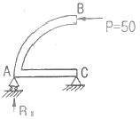
- 0
- 25
- 50
- 100
(정답률: 72%)
47. 조종간의 작동에 대한 설명이 옳은 것은?
- 조종간을 뒤로 당기면 승강타가 내려간다.
- 조종간을 앞으로 밀면 양쪽의 보조날개가 내려간다.
- 조종간을 왼쪽으로 움직이면 왼쪽의 보조날개가 내려간다.
- 조종간을 오른쪽으로 움직이면 왼쪽의 보조날개가 내려간다.
(정답률: 81%)
48. 그림과 같이 지름이 15mm 인 리벳을 이용하여 500kg의 하중(P)을 받는 두 개의 평판을 연결했을 때 리벳에 생기는 응력은 약 몇 kg/mm2인가?
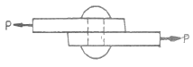
- 2.83
- 5.65
- 42.44
- 141.47
(정답률: 47%)
49. 다음 중 고정익 항공기의 일반적인 기체구조 구성요소로만 나열된 것은?
- 동체, 날개, 나셀, 기관 마운트, 조종장치, 착륙장치
- 기체, 주날개, 꼬리날개, 기관, 착륙장치
- 동체, 날개, 기관, 동력연결장치, 전자장비
- 동체, 날개, 기관, 조향장치, 강착장치
(정답률: 74%)
50. 다음 중 뒷전 플랩의 종류가 아닌 것은?
- 슬롯 플랩
- 스플릿 플랩
- 크루거 플랩
- 파울러 플랩
(정답률: 64%)
51. 너트의 부품번호가 다음과 같이 표기되었을 때 7은 너트의 어떤 치수를 의미하는가?
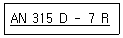
- 두께
- 지름
- 길이
- 인치당 나사산수
(정답률: 75%)
52. 호스 장착 작업시 주의사항으로 틀린 것은?
- 호스가 꼬이지 않도록 한다.
- 호스의 파손을 막기 위해 필요한 곳에 테이프를 감아준다.
- 호스 길이에 여유를 두지 않고 간단하게 장착한다.
- 호스의 진동을 방지하기 위해 클램프로 고정을 한다.
(정답률: 91%)
53. 비행기의 무게가 2500kg 이고 중심위치가 기준선 후방 0.5m 에 있다. 기준선 후방 4m 에 위치한 10kg 짜리 좌석을 2개 떼어내고 기준선 후방 4.5m 에 17kg 자리 항법장치를 장착하였으며, 이에 따른 구조변경으로 기준선 후방 3m 에 12.5kg 의 무게증가 요인이 추가 발생하였다면 이 비행기의 새로운 무게중심위치는?
- 기준선 전방 약 0.21m
- 기준선 전방 약 0.51m
- 기준선 후방 약 0.21m
- 기준선 후방 약 0.51m
(정답률: 68%)
54. 볼트그립 길이와 볼트가 장착되는 재료의 두께에 관한 설명으로 옳은 것은?
- 볼트그립 길이는 가장 얇은 판의 두께의 3배가 되어야 한다.
- 볼트그립 길이는 볼트가 장착되는 재료의 두께와 같거나 약간 길어야 한다.
- 볼트가 장착될 재료의 두께는 볼트그립 길이의 2배가 되어야 한다.
- 볼트가 장착될 재료의 두께는 볼트그립 길이에 볼트 직경의 길이를 합한 것과 같아야 한다.
(정답률: 74%)
55. 다음 중 크기와 방향이 변화하는 인장력과 압축력이 상호 연속적으로 반복되는 하중은?
- 정하중
- 충격하중
- 반복하중
- 교번하중
(정답률: 75%)
56. 강관의 용접 작업시 조인트 부위를 보강하는 방법이 아닌 것은?
- 평 가세트(flat gassets)
- 삽입 가세트(insert gassets)
- 스카프 패치(scarf patch)
- 손가락 판(finger strapes)
(정답률: 81%)
57. 비행기의 원형 부재에 발생하는 전비틀림각과 이에 미치는 요소와의 관계를 잘못 설명 한 것은?
- 비틀림력이 크면 비틀림각이 작아진다.
- 부재의 길이가 길수록 비틀림각도 커진다.
- 부재의 전단계수가 크면 비틀림각이 작아진다.
- 부재의 극단면 2차 모멘트가 작아지면 비틀림각이 커진다.
(정답률: 61%)
58. 다음 중 굽힘 여유를 구하는 식으로 옳은 것은? (단, R: 굽힘 반지름, T: 금속의 두께, θ: 굽힘 각도)
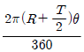
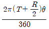
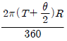
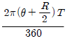
(정답률: 73%)
59. 리벳 제거 작업에 관한 설명으로 옳은 것은?
- 드릴 사용시 리벳지름보다 한 치수 작은 드릴을 사용한다.
- 리벳이 관통될 때까지 드릴 작업을 한다.
- 리벳 생크 부분에 드릴을 이용하여 몸체를 제거한다.
- 남은 리벳머리는 깨끗이 줄로 갈아 없앤다.
(정답률: 78%)
60. AA(The Alumium Association) 규격에서 알루미늄 합금 중 미그네슘 성분이 함유되지 않은 것은?
- 2024
- 3003
- 5⑤2
- 7075
(정답률: 71%)
4과목: 항공장비
61. 다음 중 자이로(gyro)를 이용하는 계기는?
- 데이신
- 선회 경사계
- 마그네신 컴파스
- 자기 컴파스
(정답률: 80%)
62. 전방향 표지시설(VOR) 주파수의 범위로 가장 적절한 것은?
- 1.8 ~ 108 MHz
- 18 ~ 106 MHz
- 108 ~ 118 MHz
- 130 ~ 165 MHz
(정답률: 86%)
63. 미국연방항공청(FAA)에서 정한 압축 공기의 공급 기준으로 객실 내의 기압은 고도 몇 ft 에 상당하는 기압 이하로 내려가지 않도록 규정하고 있는가?
- 8000
- 10000
- 15000
- 35000
(정답률: 88%)
64. 서로 떨어진 두 개의 송신소로부터 동기신호를 수신하여 두 송신소에서 오는 신호의 시간차를 측정하여 자기위치를 결정하여 항행하는 장거리 쌍곡선 무선 항법은?
- VOR(VHF Omni Range)
- TACAN(Tactical Air Navigation)
- LORAN C(Long Range Navigation C)
- ADF(Automatic Direction Finder)
(정답률: 79%)
65. 항공기에서 직류를 교류를 변환시켜 주는 장치는?
- 정류기(Rectifier)
- 인버터(Inverter)
- 컨버터(Converter)
- 변압기(Tranaformer)
(정답률: 89%)
66. 어느 도체의 단면에 1시간 동안 10800C 의 전하가 흘렀다면 전류는 몇 A 인가?
- 3
- 18
- 30
- 180
(정답률: 71%)
67. 안테나 종류에서 구조에 의한 분류 중 판상 안테나에 해당하는 것은?
- 반사형
- 집중정수형
- 분포정수형
- 복합 개구면형
(정답률: 74%)
68. 액량계기와 유량계기에 관한 설명으로 옳은 것은?
- 액량계기는 연료탱크에서 기관으로 흐르는 연료의 유량을 지시한다.
- 액량계기는 대형기와 소형기에 차이 없이 대부분 동압식 계기이다.
- 유량계기는 연료탱크에서 기관으로 흐르는 연료의 유량을 시간당 부피 또는 무게단위로 나타낸다.
- 유량계기는 직독시, 플로우트식, 액압식 등이 있다.
(정답률: 79%)
69. 16극을 가진 교류 발전기에서 400Hz 를 얻기 위해서는 회전자계의 분당 회전수는 얼마인가?
- 50
- 500
- 3000
- 6000
(정답률: 62%)
70. 다음 중 전기적인 방빙을 사용하는 부분이 아닌 것은?
- 정압공
- 피토튜브
- 코어 카울링
- 프로펠러
(정답률: 58%)
71. 회로보호장치(circuit protection device) 중 비교적 높은 전류를 짧은 시간 동안 허용 할 수 있게 하는 장치는?
- 리밋 스위치(Limit switch)
- 전류제한기(Current limiter)
- 회로차단기(Circuit breaker)
- 열 보호장치(Thermal protector)
(정답률: 65%)
72. 전파고도계(Ratio Altimeter)에 대한 설명으로 틀린 것은?
- 전파고도계는 지형과 항공기의 수직거리를 나타낸다.
- 항공기 착륙에 이용하는 전파 고도계의 측정범위는 0 ~ 2500ft 정도이다.
- 절대 고도계라고도 하며, 높은 고도용의 FM형과 낮은 고도용의 펄스형이 있다.
- 항공기에서 지표를 향해 전파를 발사하여, 그 반사파가 되돌아올 때까지의 시간을 측정하여 고도를 표시한다.
(정답률: 68%)
73. 관성항법장치(INS)의 특징에 대한 설명으로 틀린 것은?
- GPS 보다 정밀도가 우수하다.
- 전세계 어디에서도 사용가능하다.
- 시간의 경과에 따라 오차도 커진다.
- 지상의 항법 원조시설의 도움없이 독립적으로 작동한다.
(정답률: 58%)
74. 객실여압 계통의 아웃플로우 밸브(Outflow Valve)의 가장 기본적인 기능은?
- 객실의 온도 조절
- 객실의 균형 조절
- 객실의 습도 조절
- 객실의 압력 조절
(정답률: 89%)
75. 화재탐지장치 중 온도상승을 바이메탈(Bimetal)로 탐지하는 것은?
- 용량형(Capacitance Type)
- 서머커플형(Thermo Couple Type)
- 서멀스위치형(Thermal Switch Type)
- 저항루프형(Resistance Loop Type)
(정답률: 69%)
76. 유량 제어장치 중 유압관 파손시 작동유가 누설되는 것을 방지하기 위한 장치는?
- 유압 퓨즈(Fuse)
- 흐름 조절기(Flow regulator)
- 흐름 제한기(Flow restrictor)
- 유압관 분리 밸브(Disconnect valve)
(정답률: 87%)
77. 다음 중 직류전동기가 아닌 것은?
- 유도전동기
- 분권전동기
- 복권전동기
- 유니버셜전동기
(정답률: 56%)
78. 다음 중 부르동관(bourden tube)을 사용하는 계기는?
- 증기압식 온도계
- 바이메탈식 온도계
- 열전쌍식 온도계
- 전기저항식 온도계
(정답률: 63%)
79. 기압눈금을 표준 대기압인 29.92inHg 에 맞추어 표준기압면으로부터의 기압고도를 얻을 수 있는 고도 지시법은?
- QFE방식
- QNH방식
- QNE방식
- QHE방식
(정답률: 70%)
80. 유압 작동유 중 인화점이 낮아 항공기 유압계통에는 사용되지 않고 착륙장치의 완충기에 사용되는 작동유는?
- 식물성유
- 합성유
- 광물성유
- 동물성유
(정답률: 77%)